ICCAD 2015 Contest
3D-ICON: 3D Interlayer
Cooling Optimized Network
Mohamed
M. Sabry1, Arvind Sridhar2, and David Atienza3
1Stanford University, 2IBM Zurich, 3ESL-EPFL
Interlayer single-phase liquid cooling has been proposed as an effective cooling mechanism for the high-heat dissipated in high-performance 3D-stacked processing architectures. Single-phase fluid, such as water, is injected into micro-scale channels (also called micro-channels) that are etched between two consecutive vertical tiers to carry the heat out from different layers in the 3D stack. This cooling mechanism has already been proven to be much more effective than conventional air-cooling in order to remove very high on-chip temperature and cool the computing system much faster (several orders of magnitude of improvement).
A key component in inter-layer cooling that needs careful consideration is the efficiency of the cooling network. Indeed a one-design-fits-all approach of using uniform micro-channels can easily lead to overcooling, which is not an energy-efficient operation, or non-uniform cooling that increases on-chip thermal gradients giving rise to reliability issues and shorter lifetimes. Thus, it is fundamental to optimize several parameters, such as the pressure drop across the channels, the number of fluid inlet and outlet ports, and the fluid network, to achieve optimized cooling in terms of energy efficiency, thermal gradient and peak temperature.
The goal of this ICCAD 2015 problem is to evaluate the impact of different cooling networks on different computing architectures floorplans, when subjected to specific thermal performance requirements. With the CMOS process that is used for etching micro-channels on the back-side of a chip, the possibilities of creating microfluidic networks for customized cooling is nearly endless (subject to system requirements such as allowing TSVs placement and pitch constraints for inter-layer communication). However, this aspect of microfluidic cooling has not been fully explored and exploited in the current research on the field of liquid cooling and thermal packaging. We hope solving this problem would bridge this gap, motivate further research insights in liquid-based cooling, and potentially attract even more industrial and academic interest in this field.
The main objective of this problem is to find an optimized cooling network that minimizes a specific cost function while subjected to design and physical constraints. Before unfolding the target problem, we need to define several terms to avoid ambiguity. These terms are the following:
|
Term |
Definition |
|
fi |
Floorplan of layer i in the target 3D stacked architecture |
|
mji |
Architectural module j in the ith layer |
|
cni |
Cooling network layer i in the target 3D stack |
|
T(mji) |
The peak temperature observed in module mji |
|
DP |
The pressure drop observed in the entire cooling network |
|
Qin |
Inlet flow rate |
To reflect various operating conditions we have created a set of problems, which we elaborate in the following sections. As general definition, given a certain N-layer 3D-stacked computing architecture defined by floorplan F={f1, f2, …, fN}, where each layer i Î [1, N] consists of a set of j modules Mi={m1i, m2i, …, mji}, provide the set of N-1 cooling network layers CN={CN1, CN2, …, CNN-1} (cooling network layer CNi is placed between stacked layers i and i+1) that is a solution of:
a) MinT: minimizing the peak temperature (argmaxi Î [1, N] T(mij) ) and thermal gradient (ÑT), subject to pressure drop constrain (DP £ Pmax).
b) MinCE: minimizing the cooling energy (CE º DP. Qin), subject to peak temperature (argmaxi Î [1, N] T(mij) £ Tmax) and thermal gradient constraints (ÑT £ Tgradmax).
Based on the problem definition, we will provide different case studies, where each case study will have the input defined as follows:
· Number of layers in the targeted 3D stack (i.e., the number N)
· The floorplan of each layer in the targeted 3D stack (F)
· The power traces of each component in the 3D stack (M={M1, M2, …, MN})
· The list of interlayer floorplan (FIL={fil1, fil2, …, filN-1}), where each element of this list shows the locations where a microchannel placement is infeasible
In addition to the mentioned inputs, we fix the channel width to the following value for all test cases:
· Channel width= 100um
Various teams will use the mentioned inputs to provide the following list of outputs, which are used for evaluation:
· The applied pressure drop to inject the fluid to the cooling network (DP)
· The layout of the different cooling networks in the 3D stack (CN)
· The location of inlet and outlet ports
Case Study: 2-tier stack
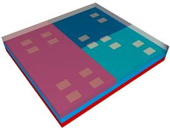As an illustrative example, we provide the inputs of a 2-tier stack, which is depicted in Fig. 1.
The inputs for this example is as follows:
N=2
F={f1,f2}
f1={m11: [(0,0), (L,W)]}
f2={m12: [(0,0), (L/2,W)], m22:[(L/2,0), (L/W/2)], m32:[(L/2,W/2), [L,W)]}
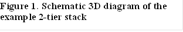P(M1)={0,0,P,P,P/2}
P(M2)={(0;0;0),(P1:P2;P3),(P1;P2/2;P3),(P1/2;0;P3/2),(0;0;0)}
FIL={fil1}
Fil1={[L1,W1],[L2,W2],…, [Lk,Wk]}
The proposed solutions by the different teams working in the competition, which is defined by the output list in the previous section, will be assessed based on:
· Finding a feasible solution
· Meeting the problem constraints
· Minimizing the relevant metric to each problem
Detailed rules regarding the format of the problem statements provided, the mode of solving and the solutions obtained are as follows:
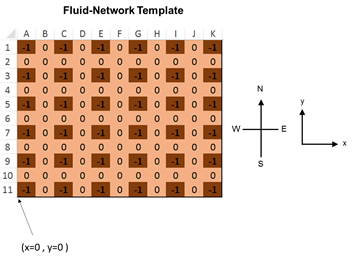
Figure 2: Template of a 11X11 Fluid-Network: 0 = silicon, 1= Fluid, -1=TSV (fixed), 2=inlet, 3=outlet.
Rules
Rule #1:
The description of the problem 3D stack, the floorplan and the heat inputs will be given in the same format as the 3D-ICE input files (“.stk” and “.flp”). Please refer to the 3D-ICE User Guide available following this link here. Divide your cavity layer into square cells (from top-view) of 100um. For a chip size of 10.1mmX10.1mm, this would give a grid of 101X101 cells. Note that some of the channel description part of the .stk file will be skipped in the input definition
as it is part of the solution that you must compute.
Rule #2:
Specify your solution fluid-network map solution in an excel file using an array of 0’s and 1’s. 0 implies there is silicon in the cell, and 1 implies channel/liquid. For the purpose of illustration, a 11X11 grid example template for a fluid-network representing a cavity layer is shown below in Fig. 2.
Rule #3:
A 2D array of alternating cells cannot have fluid and have a -1 by default- to account for TSV fabrication. This is specified in the template using bold -1’s in cells filled with brown background (Fig. 1).
Rule #4:
The table in the excel file will be visualized in the same orientation as the top-view of the physical device. That is, the bottom-left (south-west) corner of the table will correspond to origin. The origin point and the cardinal directions considered are shown in Fig. 2. This is the same convention that is used for the input heat-flux map provided in the problem, and in the 3D-ICE model.
Rule #5:
Your solution must have at least one inlet and one outlet. The inlet and outlets can only be at the edges of the microchannel layer. The edge fluid cells corresponding to inlet and outlet are specified using 2’s and 3’s respectively (see Examples 1-4, Fig. 3-6).
Rule #6:
There can be multiple inlets and outlets along all four edges of your solution. However, to reduce the complexity of the packaging, for each side, there can be at most one “continuous” inlet and outlet, as illustrated in Example 3. There should be at least one traceable fluidic path from the inlet to the outlet of the system. If there are multiple channel layers in the problem, the inlet and outlet patterns across the multiple layers must be identical. The individual fluid networks within each channel layer can however be different.
Rule #7:
Provide your final solution excel file for each problem (separately), after you name the file in the following format:
<<TeamID>>_ProblemA_<<testcase#>>.xls
where
<<TeamID>> refers to your Team Identification as you have been assigned by the ICCAD 2015 registration process
<<testcase#>> refers to the serial number of the problem test case.
If there are multiple channel layers in a given test case, provide them as separate .xls files in the following format (channel layer counted from bottom to top):
<<TeamID>>_ProblemA_<<testcase#>>_<<channellayer#>>.xls
Rule #8:
Along with your solution excel file, you must also provide ONE value of pressure drop between the inlet and outlet of your system (even if you have multiple inlets and outlets in the cavity, the pressure drop between each of them must be identical).
Important: Solutions that do
not adhere to the above rules will be disqualified.
Rule #9: To all teams: please provide all your
excel sheet submissions (named according to the rules) for all test cases in a
SINGLE folder and all the pressure drops corresponding to each test case in a
SINGLE text file inside the same folder.
Hint:
1. Use the solution fluid network template file Fluid_Network_Solution_Template_101X101.xls that has been provided to construct your final solution files.
2.
First, You must solve
the flow rates into and out of each fluid cell from/to neighboring fluid cells
based on the discretization above, and using the formula below (for simplicity
of modeling, we assume Darcy-Weisbach friction factor
for developed laminar flow):
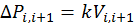 (1)
Here,
subscript i,i+1 refer to the pressure
drop between two neighboring cells with indices i and i+1, and the flow rate from cell i to the neighboring cell i+1 (please note that the indices are
only illustrative, and do not refer to which “direction” we are moving from the
current cell to the neighboring cell- could be north, south, east or west). The
value of the k or the method to compute is provided for each test case
separately. Please see the test case description pdfs.
Essentially,
you must construct and solve a simple “pressure-flow network” problem which
looks like a resistive network where Pressures are voltage and flow rates are
currents, according to the above formula and get all local flow rate for each
fluid-fluid interface of each fluid cell in your network (see Examples 1-3).
Describing an arbitrary network of microchannels here
can be easily accomplished using Graph Theory, by building an "Directed
Incidence matrix" Z where the rows indicate all the liquid cells/nodes and
the columns containing +1/-1/0 indicate the presence/absence of a connection
between 2 nodes (channel) and the assumed direction of flow (https://reference.wolfram.com/language/ref/IncidenceMatrix.html).
This matrix Z would essentially give the relationship between the pressures in
each cell/node (with respect to the reference pressure at the inlet) and the
pressure drops across each edges/channel segments as follows:
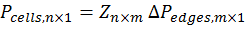 (2)
By
combining this matrix Z with the known linear relationship between pressure
drop across each "edge" and the flow rate between them (Equation 1
above), you can easily solve the flow rates in the entire network using
sparse matrix inversion.
3.
Once the local fluid
flow rates and directions are computed, you could tweak the 3D-ICE (4RM) model
based on the same discretization of 100um X 100um for all layers. This will require
some minor coding of the 3D-ICE program (if you plan to use it). For each
fluid-solid interface in your problem, use the following formula to calculate
the local convective conductance term in the equivalent thermal RC grid
construction (see [1] and http://esl.epfl.ch/3D-ICE
for more details):
(3)
Ainterface refers to the area of the wall interface
of the fluid cell towards a particular neighboring solid cell. The value of/the
method to compute the heat transfer coefficient hconv
will be provided for each test case separately. For simplicity of modeling, we
assume Shah-London heat transfer correlation for fully developed laminar flow
in all our problems.
4.
Once you build the
channel network flow rate and the heat transfer models as described above, your
system model is ready. Now you use this model to search the design space of
channel networks (by respecting the various constraints) using any method you like
(Gradient descent methods, Monte-Carlo, Simulated Annealing, Genetic algorithms
etc.) for an optimal design.
5.
As a first attempt, if
building the channel network model is too complex, you could simplify in
various ways. For example, in the new heat transfer model, you could only
consider the vertical thermal resistances and neglect the North-South-East-West
resistances in the first pass, since bulk of the heat enters the channels from
the Top and the Bottom. The optimal channel solution you obtain would be pretty
close to the one you would find if you included these lateral resistances in a
network. Once you find this approximate solution, you can refine your search to
find the exact one.
6.
There have been works
done in the past on finding optimal microfluidic networks to minimize various
cost functions, similar to this problem. You can find them here:
[i]
Van Oevelen, Tijs, and
Martine Baelmans. "Numerical topology
optimization of heat sinks." Proceedings of the 15th International Heat
Transfer Conference. 2014.
[ii] Zhang, Yongcun, and Shutian Liu.
"Design of conducting paths based on topology optimization." Heat and
Mass Transfer 44.10 (2008): 1217-1227.
[iii] Xu, Peng, and Boming Yu. "The scaling laws of transport properties
for fractal-like tree networks." Journal of applied physics 100.10 (2006):
104906.
You could adapt the
principles described in these papers to find the optimal design for this
problem.
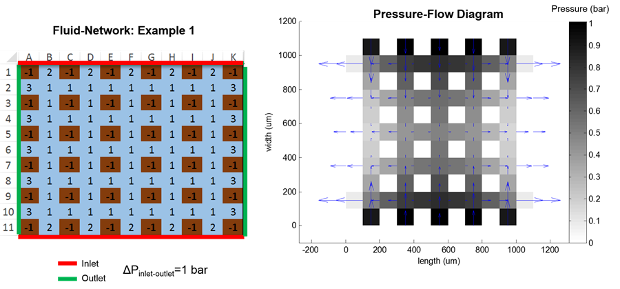
Figure 3: Fluid-Network Example 1 and the resulting Pressure-Flow Diagram
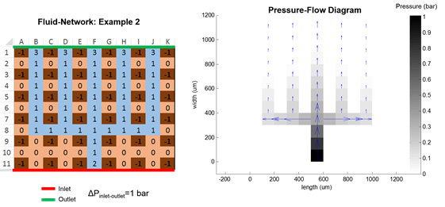
Figure 4: Fluid-Network Example 2 and the resulting Pressure-Flow Diagram
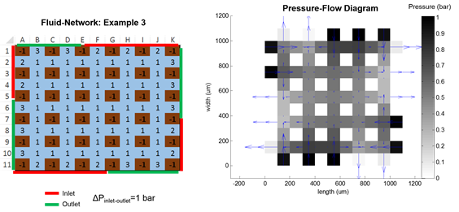
Figure 5: Fluid-Network Example 3 and the resulting Pressure-Flow Diagram
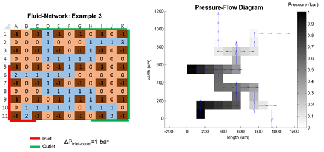
Figure 6: Fluid-Network
Example 4 and the resulting Pressure-Flow Diagram
References
[1] Sridhar, A. Vincenzi, D. Atienza Alonso and T. Brunschwiler. 3D-ICE: a Compact Thermal Model for Early-Stage Design of Liquid-Cooled ICs, in IEEE Transactions on Computers, vol. 63, num. 10, p. 2576-2589, 2014.
[2]
M. M. Sabry,
A. Sridhar, J. Meng, A. K. Coskun
and D. Atienza. GreenCool: An Energy-Efficient Liquid
Cooling Design Technique for 3-D MPSoCs Via Channel
Width Modulation, in Ieee Transactions On
Computer-Aided Design Of Integrated Circuits And Systems, vol. 32, num. 4, p.
524-537, 2013.
Test Cases
l Testcase01 Testcase01(update)
l Testcase02 Testcase02(update)
l Testcase03 Testcase03(update)
l Testcase04 Testcase04(update)
l Testcase05 Testcase05(update)
l ReadMe.txt ReadMe.txt(update)
General feedback
1.
How do we rate the
submissions: since these problems are extremely challenging without any clear
analytical solutions, we will consider this to be a "race" between
the teams- which ever team minimizes the cost
function the most (while respecting the constraints) gets the best score. We
will give appropriate weights to the final cost function and the
observance/violations of the constraints where applicable. The priority of the
constraints, as described in the problem statements, is in the order in which
they are listed in each case.
2.
Clarification regarding
the "temperature gradient" constraint in the various test cases. It
is defined as follows:
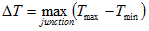
That is, first for each "junction" layer or source layer in a given
test case, find the Tmax-Tmin. This is the per-die
temperature gradient. Then find the maximum of these temperature gradients
across all dies in the 3D stack in the test case. This is the "temperature
gradient" of the 3D stack, which must be maintained below the specified
value in each test case problem. This has been updated in the attached Alpha
Test cases. (please download them from the contest
website).
3.
As mentioned in the
rules of the problem statement in the website, the channel layers are numbered
from bottom to top- that is the same as what you use in naming your excel file.
For eg. <<TeamName>>_ProblemA_testcase04_channel01.xls
refers to the bottom channel layer and <<TeamName>>_ProblemA_testcase04_channel02.xls
refers to the top channel layer in Test Case 04.
4.
As already described in
the description of Test Case 04, both the channel layers must share the SAME
inlet and outlet "lines" or ports (even if their individual channel
networks are different), which means that the pressure drops across all inlets
and all outlets in all layers must be the SAME. Hence, you must only give ONE
pressure drop value for both the channel layers.
5.
There are some are some
typos in some of the .stk files in the original Alpha
test cases. They have been
corrected in the newly updated Alpha test cases. Please download them from the
contest website
6.
The teams are
free to continue to revise their submissions for the existing test cases for
Problem A until the final submission deadline
7.
The teams
must submit a brief abstract describing their methodology in solving the
Problem A. The abstract (in .pdf or .doc format) should be written in a single
A4/US letter page layout, and should not be longer than 1200 characters
including spaces, containing a maximum of two figures. Reports not adhering to
these rules will be rejected.
8.
The teams
must follow the instructions on how the excel files and the text document for
pressure drop must be organized before the final submission. Remember to put
all excel files in the same folder and the pressure drops in in a single text
file in the same folder - just submit ONE folder without any sub folders. The
submissions of teams not adhering to these rules will be disqualified.
9.
Only the
latest solutions submitted on/before the final submission deadline will be
evaluated. All previous versions/submissions will be discarded.
FAQ
1.
For
micro-channels with bended structure, should we modify the codes in 3D-ICE by
using the ways discussed in the paperhttp://infoscience.epfl.ch/record/186785 if we need to use the state-of-art thermal
simulator in the optimizing flows for the microchannel network design?
ANS: Yes, you are free to
3D-ICE model based on the paper.
2.
If question 1 is
acceptable, could we know that how the evaluation of the results is going on
for the bended structure? That is, should we need to upload the codes about the
modified codes of 3D-ICEs or do other things (such as follows the format of the
given design in the future on website)?
ANS: All the above points about constraints and
evaluation procedure will be given later, during the final problem
announcement.
3.
For the given inputs, it seems no constraint about the
structure (only maximum temperature ant thermal gradient) during design
iterations. Could we know that microchannel widgets/heights can be changed
(along with the microchannel length, like the proposed method in
GreenCoolhttp://infoscience.epfl.ch/record/186491/files/TCAD2013-04-06480864.pdf?version=1 ); pitch located between microchannels
be constrained or not; and how thermal gradient is defined?
ANS: All the above points about constraints and
evaluation procedure will be given later, during the final problem
announcement.
4.
I am very new to the research area, so my apologies if the
question is trivial. The problem asks us to provide a layout of the cooling
networks given a set of constraints. The tool to be used to evaluate the solution
is 3D-ICE. I have been unable to locate where are the
cavity geometries specified in 3D-ICE. As far as I have been able to tell, it
assumes uniform cavities. Please suggest.
ANS: “D-ICE” is not
mandatory to be used, it is highly recommended though. The 3D-ICE framework can
be modified similar to the approach shown in this link http://ieeexplore.ieee.org/xpl/articleDetails.jsp?arnumber=6532287.
Thus some coding effort is required. I hope this clarifies the confusion and
addresses the question below.
5.
How is the definition of thermal gradient?
ANS: Thermal gradient is
defined as Tmax-Tmin in a given active layer (or
across different layers)
6.
In the microchannel design, is the
flow rate of each microchannel grid all the same?
(It seems if the
microchannel grid is with three input and one output,
the flow rate is not the same? So it could be needed to solve mass balance
equation?)
ANS: You must solve the
flow rates into and out of each fluid cell from/to neighboring fluid cells
based on the discretization above, and using the formula below (for simplicity
of modeling, we assume Darcy-Weisbach friction factor
for developed laminar flow):
Here, subscript i,i+1 refer to the pressure drop
between two neighboring cells with indices i and i+1,
and the flow rate from cell i to the neighboring cell
i+1 (please note that the indices are only illustrative, and do not refer to
which “direction” we are moving from the current cell to the neighboring cell-
could be north, south, east or west). The value of the k or the method to
compute is provided for each test case separately.
You must construct and solve a “pressure-flow network”
problem based on the above formula and get all local flow rate
for each fluid-fluid interface of each fluid cell in your network (see Examples
1-3).
7.
For the question 1. “How is the definition of thermal
gradient?” I’m still confused. The example seems to be designed for transient
state power waveform? If yes, how is the definitions
of thermal gradient in transient state?
ANS: The definition of the thermal gradient is as I have stated
before. If there is a case where transient simulations are needed (highly
unlikely), the specific definition will be given on a case- by-case basis.
8.
I have some question about the case study: 2-tier stack on
the website. It is shown as follows:
Case Study: 2-tier
stack
As an illustrative
example, we provide the inputs of a 2-tier stack, which is depicted in Fig. 1.
The inputs for this example is as follows:
N=2
F={f1,f2}
f1={m11:
[(0,0), (L,W)]}
f2={m12: [(0,0),
(L/2,W)], m22:[(L/2,0), (L/W/2)], m32:[(L/2,W/2), [L,W)]}
P(M1)={0,0,P,P,P/2}
P(M2)={(0;0;0),(P1:P2;P3),(P1;P2/2;P3),(P1/2;0;P3/2),(0;0;0)}
FIL={fil1}
Fil1={[L1,W1],[L2,W2],…,
[Lk,Wk]}
Are P(M1) and P(M2) represented transient power waveform
(with five time steps on each macro) or other explanations on those?
ANS: The power values will be given as steady-state values but at
different running scenarios. If for any reason there is a transient component
to the power problem, we will explicitly specify it.
9.
The 3D-ice can only deal with one type of cooling network(parallel form). So if we want to check the perform of our designed cooling network, we have to
modify the 3D-ICE tool. But how will the result be graded? Is this possible
that you already have a tool to compute the efficiency of network? (But can't
offer the tool to participants) Or maybe I have misunderstand
some part of the problem?
ANS: 3D-ICE can deal with parallel and bent channels (check the TCAD
paper: http://infoscience.epfl.ch/record/186785/files/TCOM2014-3D-ICE.pdf?version=1)
So the participants have to slightly modify 3D-ICE to accept
different cooling network topologies, but the tool kernel can handle it.
10. How important of the MinT and MinCE in the formal
problem definition? Is there any percentage between them? (e.g,
MinT occupied 35% of total points and MinCE occupied the left 65%)
ANS: Both problems are equally important, which can be seen as 50%
each
11. Can we know how 3D-ICE
tool work in details in the coming announcement? Will the official release more
explicit problem information? (After surveying the reference papers and
downloading the 3D-ICE tool then tracing 3D-ICE's source code, we found out
that it seems that we now still don't know how 3D-ICE work in reality since we
didn't see any equation or assumption in the codes. So we want to inquire about
the assumptions or the equations used in 3D-ICE since the evaluation tool is
also the 3D-ICE.)
ANS: 3D-ICE has a special documentation on how it works, and the two
publications (ICCAD’10 and TCAD’14) explain the theoretical foundations well.
Please note that 3D-ICE has been used numerously in other research efforts.
Thus the tool can be seen as self-contained.
12. After tracing 3D-ICE's
codes, we found out that 3D-ICE seems to package some information and then send
it to server side to be computed. Then server side send back the computed
results to client side(user, we). So can we modify the
real computation codes in 3D-ICE?
ANS: 3D-ICE includes both server-client and standalone modes. So you
can only use the standalone model.
13. When can I get the
problem stack .stk file?
ANS: we will post the test case project files soon
. Please keep checking the problem website
Do I have to assume
that, the outside environment is ambient or should I assume that it is
insulated?
ANS: It will be specified for each test case separately.
And regarding the
problem A, do I have to submit the code or only the generated .xls files?
ANS: No, only the .xls file is necessary.
14. The content of problem
A mention that we need to refer to the user guide and we should compile the SuperLU and 3D-ICE before we begin, but When we enter the
command line $make superlulib, it present ar: /edahome/cad2015/Codes/SuperLU_4.3/lib/libsuperlu_4.3.a:
No such file or directory and we check the directory and then we found that we
don't have the file libsuperLU_4.3.a in our
directory. We check the compressed file superlu_4.3.tar.gz, find there are no library in this file, the "lib" folder is
empty. So we cannot successfully construct the experimental environment.
ANS: Did you follow the process of compiling superlu
correctly? See the 3D-ICE user guide page 6 for the pre-requisites...
Before compiling 3D-ICE, you must compile the SuperLU
library by executing the following commands:
$ wget http://crd.lbl.gov/~xiaoye/SuperLU/superlu_4.3.tar.gz
$ tar xvfz superlu_4.3.tar.gz
$ cd SuperLU_4.3/
$ cp MAKE_INC/make.linux make.inc
Next, check and edit the SuperLUroot variable in ./make.inc and select the blas library
before compiling.
You can either use a blaslibrary installed on you system or theblaslibrary
supplied by the authors of SuperLU (see the README
file).
If you decide to use the former then thevariable
BLASDEFmust be set to -DUSE_VENDOR_BLASand BLASLIB must point to
your blas library. Then compile SuperLU with
$ makesuperlulib
For the latter, BLASDEF must be unset and
BLASLIB must point to the libblas.a archive.
To compile the blas library included in the sources of SuperLU
the Fortran compiler g77must be available on the system. Then compile SuperLU with
$ make blaslib
$ makesuprlulib
These are the operations that can be done when compiling SuperLU on a generic Linux platform. In case of a different
architecture, please reference to the README file.
15. We need Test Cases:
(1) We need Test Cases
as inputs for our alpha test, which we could not find in CAD Problem A website links. Please tell us how to get the inputs and
input formats.
(2) Whether "stk"
and "flp" files are part of the inputs?
Whether exist Pmax and
Tmax, the feasible
constraints, if so, which part of inputs
for us to allocate those
constraints?
ANS:The test
cases will be posted soon. Please keep checking the website.
16. What are the
relationships between Problem A and 3D-ICE tool?
(1) Whether Problem A gets the same
inputs of stk and flp, so
that Problem A could be compared with 3D-ICE tool? That is, Problem A is the
similar tool with 3D-ICE?
(2) Whether the inputs of stk
& flp in 3D-ICE are part of the inputs of Problem
A? That is, we need the complete
description of input file.
(3) Whether 3D-ICE is an evaluation
platform for Problem A's results to execute to get the results?
ANS: stk and flp files will be
provided for Problem A. Please see 3D-ICE documentation for their definitions.
You don't have to use 3D-ICE for your problem solving.
But you can if you want (you will have to modify the code to your needs).
17. What are the
measurement metrics and their cooresponding
percentage in the final score?
(1) Fluid Network: What are the
exact measurement metrics/criteria with their coorespnding
percentage: CE (Cooling Engergy), Peak Temperature,
Gradient of Temperature,number
of inputs, number of outputs, the total router length of cooler
paths, the maximum router
length of cooler paths?
(2)Pressure Flow Diagram: What are
the metrics for Pressure Flow Diagram and their percentage? (3) CPU Time? Memory Usage? And other metrics?
ANS:
Each test case will have its own cost function to minimize and that will be the
metric used to compare different teams.
18.
MinT: minimizing the peak temperature (argmaxi Î [1, N] T(mij) ) and thermal gradient
(ÑT), subject to pressure
drop constrain (DP £ Pmax).
b) MinCE: minimizing the cooling energy (CE º DP. Qin),
subject to peak temperature (argmaxi Î [1, N] T(mij) £ Tmax) and
thermal gradient constraints (ÑT £Tgradmax).
Is
it two problems that need to provide two solutions or one problem
that the solution satisfy the two requests at the same
time?
ANS: Each test case will have its own cost function to minimize.
Please wait for the details.
19. If we only need to
submit the .xsl file, how can you know the 'stk' file which we implemented? And we read the user guide
book about 'stk' description, there is only the model
of straight line channel, such as page 18
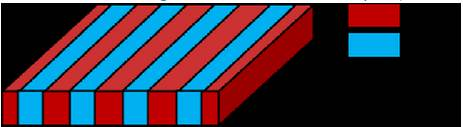
But in fact, we can also implement the model of L-shape channel (turn-left or turn-right)
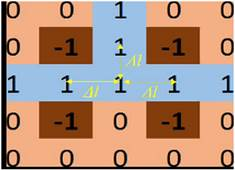
We don't know how to describe this kind of model in 'stk' file, can you give us some
examples?
ANS: The purpose of the
contest is to design new channel networks. It is up to the participants to
model these different structures on the top of existing 3D-ICE. You must
provide your design in the .xls file.
20. And in 3D-ICE
emulator, it only need to feed the 'stk' and 'flr' file to check our performance, is there any way to
translate the result into Excel '.xls' file ? or we need to type the '.xls'
manually ?
ANS:Yes, you must
generate the .xls file yourself and program these
aspects.
21. In test case 1, we
have some constraint about temperature,
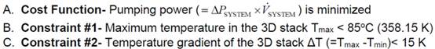
How can we know the temperature is not out of the
constraint when we are designing the channel in our program ?
Or the only way to know the temperature drop is to run the emulator to get the
results?
ANS: Yes you must run the
simulator.
22. What's the unit of '.xls' file and the dimensions in 'stk'
file ?
The size of '.xls' file is a
101*101
but the size of 'stk' file is 10100*10100
ANS: One is a number
while the other is dimension in um. As mentioned in the test cases, the
dimension is 100um X 100um
23. For test cases with
#Dies > 2, should the pressure drop between the inlet and outlet of the
system be found separately? (i.e. P_channel_01_layer=300kpa and
P_hannel02_layer=400kpa)
ANS: The two layers of channel share the same inlet and outlet port
lines. So they must have the same pressure drops across them. Sorry, if this
wasn't clear in the problem definition.
24. The problem asks for a
cooling network and the pressure drop between the inlet and outlet of the system. Is the pressure drop a single value or a vector
(e.g. a value for each inlet or outlet) ?
ANS:The pressure drop is a single value from the inlet(s) to outlet(s).
Please note that despite there can be several inlet ports, they are all
connected to the same source (same case in outlet). Thus all inlets will have
the fluids at the same input pressure, and at the outlet(s) will have the same
pressure (to avoid any back flow of fluids).
25. Would you explain more
about the evaluation procedure?
ANS:Each time will submit their cooling network(s), based on the
optimization problems and test cases. We will then use these inputs to see if
indeed the objective functions have been met or not.
26. If we do not need to
submit any code or executable, does that mean there will be no hidden
benchmark? Will it be possible for the participants to exhaust all reasonable
networks and submit the best one as a single excel file?
ANS:For the time being there are no hidden benchmarks. The whole purpose of
the problem is two provide the optimal network based on the problem
definitions. you are free in your choice to do an
exhaustive search algorithm.
27. According to the
announcement, we can use CIC's machine to build our source code. So we can
co-build our projects also on CIC's machine? (I mean that whole team use that
account to code) And does it equals to that we can also build up
"3D-ICE" on CIC's machine? If it is ok, but I found out that
"3D-ICE" need to be compiled under C11 standard, but CIC's machine's gcc version seems to be not enough?
ANS:In the problem A, you only need to submit excel files. Therefore, you
can install and run 3D-ICE on your machines. So far, we do not install C11
standard in CIC machines. We need to discuss with CIC if it is possible to
install C11 standard in CIC machines.
28. According to the
pictures attached to this email, what should we submit to alpha version test,
beta version test and final submission? Due to the pictures, it seems that we
need to submit our program's execution file and README.txt, but the official website(FAQ part, question 13) said that "And regarding
the problem A, do I have to submit the code or only the generated .xls files? ANS: No, only the .xls
file is necessary.". So what should we really
submit? Only ".xls" file? Or also need
".exe" file? Or something else?
ANS: In the problem A, you only need to
submit excel files.
29. If I did not submit
files in alpha test, may I still submit files for beta test?
ANS: Yes. You are encouraged to submit files for beta test and final
test.
30.
In
the hint 2 of question A, it mentions that: "You
must solve the flow rates into and out of each fluid cell from/to neighboring
fluid cells based on the discretization above." But I don't know how to
calculate flow rate of each cells by using input informations,
such as number of layers, floorplan and power trace.
ANS: The method to solve is explained in the
problem description file for each test case (and also in the website)
31.
The
solution .xls file, is the color needed? Would we
just submit the .xls file with numbers and no colors
ANS: Numbers are just fine.
32.
Would
we have to use our program to get .xls file, or could
we get a solution but .txt file by our program and get .xls
file by hand?
ANS: It is up to you how you generate the
excel file.
33.
What
is the unit of the value of pressure drop? According to the formula, we
transform all the parameters to SI unit and get the unit s^-1. We don't know
the correct unit of pressure drop.
ANS: The unit of the pressure drop can be
either in Pascals or Bar (1 Bar=100 Kilo Pascals)
34.
About
Thermal gradient, In the website, it's said That is,
first for each "junction" layer or source layer in a given test case,
find the Tmax-Tmin. This is the per-die temperature
gradient. Is it needed to account for the Tmax-Tmin
in Channel layer?
ANS: The optimization problem accounts for
the change of the die temperature gradient. If for any reason they need to
account for the channel thermal gradient then they should define the thermal
gradient of the channel layer as Tmax-Tmin of the
fluid for each channel layer.
35.
I
want to confirm that is the junction layer refers to the layer that the channel
exists?
ANS: The junction layer is the layer where
the active components reside (i.e., the layers with the digital components
generating heat).
36.
Basically,
we have implemented our own evaluation platform, but are not sure about the
consistency between ours and yours. If you can kindly give us the result values
of our beta submission, we can use it to check our evaluation platform and need
not worry about doing a misguided design.
ANS: There are easy ways to test the accuracy
of the models you build: simulate an existing conventional straight channel
example using the default 3D-ICE code and then again using your new modified
model. The comparison of the results must give you an indication whether your
implementation is correct or not.